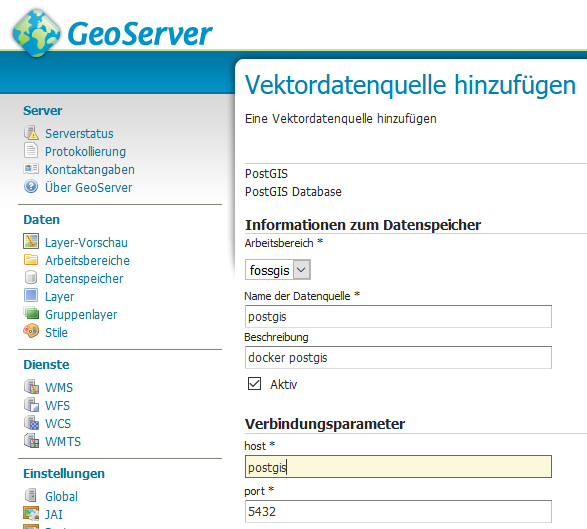

Dockerize Stuff

Postgis Swarm And More
Operating System Level Virtualization
It´s written in GO
# Spin up 100 nginx containers in less than 1 minute
time for i in $(seq 1 100); do
docker run -d -P --name nginx_$i nginx:alpine
done
# time: 0m56.476s
Virtual Machines?
Postgis in a box
Pull it
$ docker pull mdillon/postgis
Using default tag: latest
latest: Pulling from mdillon/postgis
974c2c350dc4: Downloading [========================> ] 22.46 MB/45.13 MB
...
Run it
$ docker run --name postgis \
-e POSTGRES_PASSWORD=docker \
-p 55432:5432 \
-d mdillon/postgis
d4fdb5c6b51b4463a3244ead0247640998bbcdb900f7ca6f2ce08206b5bfbc3a
CONTAINER_ID: d4fdb5c6b51b
IMAGE: mdillon/postgis
PORTS: 0.0.0.0:55432->5432/tcp
NAME: postgis
Networks in docker
bridge, overlay, ...
bridge
... are best when you need multiple containers to communicate on the same Docker host.
$ docker network create fossgis
$ docker run --name postgis --network fossgis -p 55432:5432 -d mdillon/postgis
$ docker run --name geoserver --network fossgis -p 58080:8080 -d kartoza/geoserver
$ docker network inspect fossgis | jq ".[].Containers"
{
"5c8b8cf8c7631c028694653e3d35f72d709ab6c9a3fb6b7e127de6993685d10d": {
"Name": "geoserver",
"EndpointID": "d63198bdab9b9edcf641ecedd2b21853af8c35e574b6e3347ce4fff42baa8163",
"MacAddress": "02:42:ac:13:00:03",
"IPv4Address": "172.19.0.3/16",
"IPv6Address": ""
},
"e500639420b3f26781652105402bae57e759905514e0f81550450783da35ce61": {
"Name": "postgis",
"EndpointID": "c6fd0c7388182ade5e600fda374a4e8d220e26b88f66aebf59fb8c747ebd6b1f",
"MacAddress": "02:42:ac:13:00:02",
"IPv4Address": "172.19.0.2/16",
"IPv6Address": ""
}
}
http://localhost:58080/geoserver
overlay
... are best when you need containers running on different Docker hosts to communicate, or when multiple applications work together using swarm services.
$ docker network create --driver overlay fossgis_swarmdocker compose
version: "2"
services:
postgis:
image: mdillon/postgis
ports:
- "55432:5432"
environment:
- POSTGRES_PASSWORD=docker
geoserver:
image: kartoza/geoserver
ports:
- "58080:8080"
Run services
$ cd docker
$ docker-compose up -d
Creating network "docker_default" with the default driver
Creating docker_postgis_1
Creating docker_geoserver_1
Orchestration
Docker Swarm
Since Docker Version 1.12
Managers & Workers
Manager

# Create a manager
$ docker swarm init --advertise-addr 192.168.99.100
# Generate the token needed to join the manager
$ docker swarm join-token workerWorkers

# Join the manager
docker swarm join --token [...] 192.168.99.100:2377Deploy a service
$ docker service create \
--replicas 2 \
--name helloworld \
alpine ping docker.comPostgis cluster
Swarm setup
See slides to "Docker Swarm"
Network setup
Create an overlay network on the manager node
$ docker network create --driver overlay postgis_swarmMaster setup
Add label to worker1
$ docker node update --label-add type=master worker1Run master service
#!/bin/bash
MASTER_SERVICE_NAME="postgis-master"
docker service create \
--publish "5432:5432" \
--mount type=volume,src=$MASTER_SERVICE_NAME-volume,dst=/pgdata,volume-driver=local \
--name $MASTER_SERVICE_NAME \
--network postgis_swarm \
--constraint 'node.labels.type == master' \
--env PGHOST=/tmp \
--env PG_USER=testuser \
--env PG_MODE=primary \
--env PG_PRIMARY_USER=master \
--env PG_ROOT_PASSWORD=password \
--env PG_PASSWORD=password \
--env PG_DATABASE=userdb \
--env PG_PRIMARY_PORT=5432 \
--env PG_PRIMARY_PASSWORD=password \
--env PGDATA_PATH_OVERRIDE=persistent \
crunchydata/crunchy-postgres-gis:centos7-10.0-1.6.0
Some header
- --mount
type=volume,
src=$MASTER_SERVICE_NAME-volume,
dst=/pgdata,
volume-driver=local - --network postgis_swarm
- --constraint 'node.labels.type == master'
- --env PG_MODE=primary
- --env PGDATA_PATH_OVERRIDE=persistent